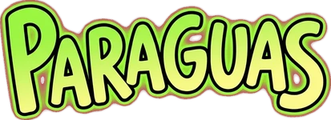

Elegí tu idioma
Se puede cambiar después desde el menú.

Se puede cambiar después desde el menú.
Dedo quieto: se cierra, caés rápido y pasás por cualquier lado. Arrastrá: se abre, caés lento y maniobrás.
Mejor caída 0 m
Un dedo hace todo.
¡RÉCORD!
Caíste